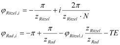
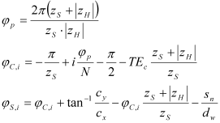

|
|
|


接触分析的啮合位置
通常，接触分析针对一个齿距（行星系统中为一个系统周期）进行。此处涉及的齿轮的啮合位置角计算如下：
对于 ，在一个齿距内，N 个啮合位置中的基准啮合位置 i 为：

TE = transmission error
对于 ，在一个齿距内，N 个啮合位置中的基准啮合位置（太阳轮和行星架）i 为：

此处适用以下内容：
p = system period
C = planet carrier
S = sun
H = internal gear
TEc = transmission error, planet carrier
sn = tooth thickness, sun
dw = operating pitch diameter
cx,y = 第一个行星在笛卡尔坐标系中的位置
Meshing position for contact analysis
Normally, the contact analysis is performed for a pitch (or for a system period in the case of planetary systems). The meshing position angle of the gears involved here is calculated as follows:
for a , for a pitch, the base meshing position ifor N meshing positions is:
TE = transmission error
For a , for a pitch, the base meshing position (sun and planet carrier) i, for N meshing positions, is:
Here, the following apply:
p = system period
C = planet carrier
S = sun
H = internal gear
TEc = transmission error, planet carrier
sn = tooth thickness, sun
dw = operating pitch diameter
cx,y = position of the first planet in the Cartesian coordinate system